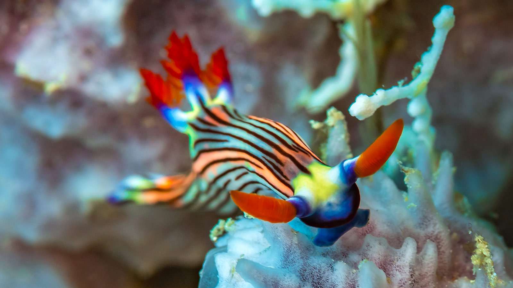
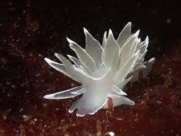
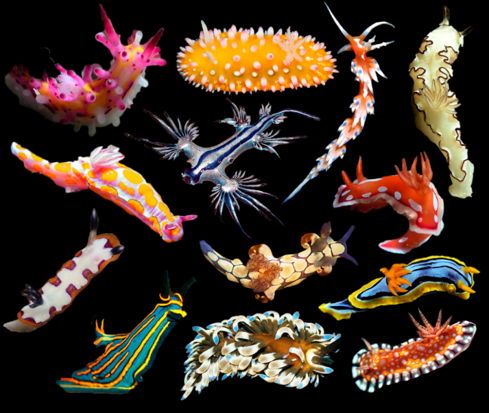
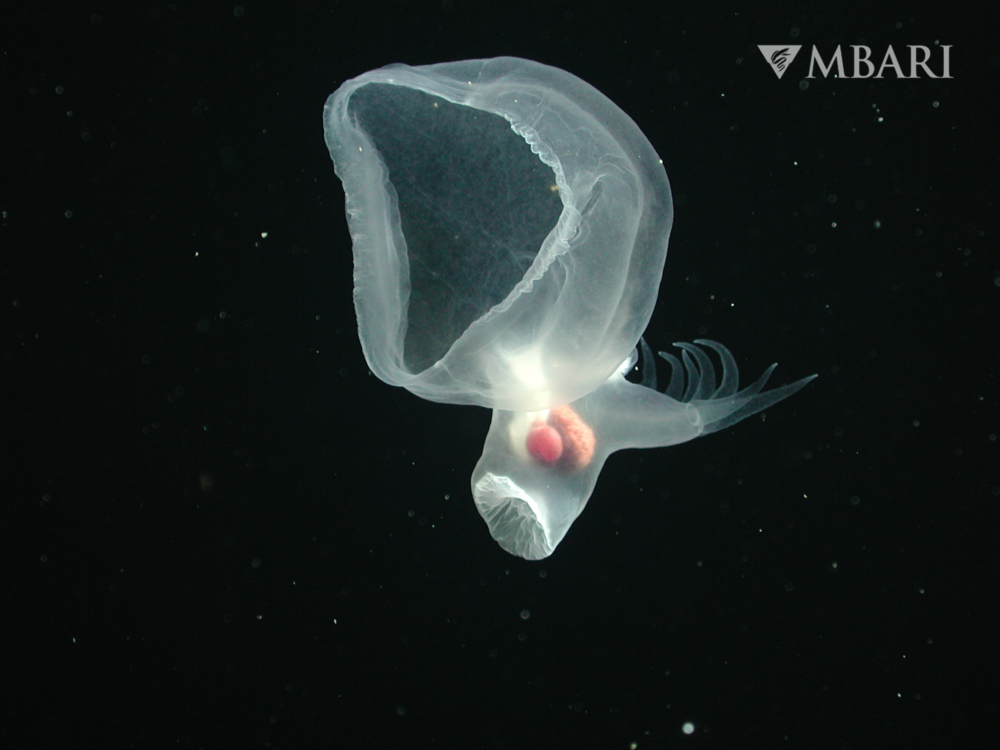

Nudibranchs of the Tropics:
Their coloration is a warning to predators... Find out why these creatures should not be underestimated!

Nudibranchs of the Tropics:
Their coloration is a warning to predators... Find out why these creatures should not be underestimated!

Nudibranchs of the Pacific Northwest:
From Oregon tide pools to pacific depths, discover the nudibranchs that make their home close to ours.
Taste the Rainbow:
Nudibranchs really are what they eat. Learn how they source pigmentation from their diet.
All About Adapatation:
Explore Nudibranchia's research collection and find out all about advanced sea slug adpationsHelp Nudibranchia scientists identify and classify nudibranchs in our online database. to learn more!